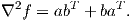
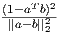

where a,b ∈ ℝn, aT a = bT b = 1, a≠ ± b.
- (5 points) Show that = (a-b)∕||a-b||2 is a KKT point for this problem, with negative objective function value.
- (10 points) Are there any other points that satisfy the first order KKT conditions?
- (5 points) What is the Hessian matrix of the objective function? Is the objective function convex?
- (5 points) What are the optimal value and the optimal solution(s)?
Solution:
- We have
so the KKT conditions are
We have T = 1 so feasibility is satisfied and the complementarity condition is satisfied for any u ≥ 0. Note that -1 < aT b < 1. We haveso we satisfy the gradient condition if we take u = (1 - aTb).
We have
- Any x satisfying aT x = bT x = 0 satisfies the KKT conditions if we take u = 0. Since a and b
are not parallel, this is the only way to satisfy the KKT conditions with u = 0. All these points
have f(x) = 0.
From (1), if u > 0 then we must have x = αa + βb for some scalars α and β. We can express the gradient condition in terms of α and β:
Since a and b are not linearly dependent, we must have
so α2 = β2. Since u > 0, we must have α = -β so u = (1 -aT b) and x = ±(a-b)∕||a-b||2. Thus, we have one more KKT point with u > 0, namely = (b - a)∕||a - b||2.
- The Hessian matrix is
 This is not psd: taking d = a - b gives dT ∇2fd < 0.
- The feasible region is compact and the objective function is continuous, so a global minimizer exists. The feasible region is convex and there is a strictly feasible point, for example x = (0,0). Thus, the global minimizer is a KKT point. The only KKT points with negative objective function value are ±, so they are optimal, and the optimal value is - = -(1 - aT b).
|
| (5) |
where u ≥ 0 is a scalar. Express the dual function in closed form (that is, solve the minimization problem in (5) for each value of u ≥ 0). Hence solve the dual problem
Solution:
We can write
If the matrix 2uI + abT + baT is positive semidefinite then the optimal solution to the minimization problem is to take x = 0, giving θ(u) = -u.
If the matrix 2uI + abT + baT has a negative eigenvalue with corresponding eigenvector w then taking x = μw with μ →∞ shows the minimization problem has an unbounded optimal value so θ(u) = -∞.
The eigenvalues of 2uI + abT + baT are equal to 2u plus the eigenvalues of M := abT + baT . Any vector orthogonal to both a and b is an eigenvector of M with eigenvalue 0. So 0 is an eigenvector of M with multiplicity n - 2. The remaining eigenvectors are linear combinations of a and b. Let w = αa + βb be an eigenvector of M with eigenvalue λ. We have
so α2 = β2 so α = ±β. Thus, we obtain eigenvectors:
Thus, the dual problem is:
which has optimal value - achieved by u* = .
Note that for this problem the optimal primal and dual values agree.
Note that the point from Question 1 is a member of the solution set X(u*), as is any point of the form α for any scalar α.
|
| (6) |
we have b ∈ ℝm and A ∈ ℝm×n. Let e denote the vector of ones. The problem can be expressed equivalently as the linear program
|
| (7) |
- What is the dual linear program to (7)?
- Assume you have an optimal solution (u*,v*) to (7) along with an optimal dual solution. Let
x* = u*- v*. Construct a subgradient ξ to f(x) at x* such that
Make sure you explain why these conditions hold for your choice of ξ.
Solution:
- The dual is
- Take ξ = ATy. Note that:
- For ξ to be a subgradient, we need:
By complementary slackness, if xi* > 0 then ui* > 0 so si* = 0 so (AT y*)i = 1, as required.
By complementary slackness, if xi* < 0 then vi* > 0 so ti* = 0 so (AT y*)i = -1, as required.
By dual feasibility, if xi = 0 then -1 ≤ (AT y*)i ≤ 1, as required.
- The normal cone to the manifold consists of vectors of the form AT z for some z ∈ ℝm, so
our choice ξ is in the normal cone. If x satisfies Ax = b then A(x - x*) = 0,
so
- For ξ to be a subgradient, we need:
Is f(x) convex?
Solution:
No. Eg, f(0) = a2, while f(±av) = 0 for any unit vector v. So
violating the definition of a convex function.
Alternatively, it is possible to also answer this question using the gradient or Hessian of f(x), which are defined provided x≠0. Note that f(x) is nondifferentiable when x = 0. We have
for x≠0. The Hessian matrix is not psd if n ≥ 2 and ||x||2 < a.
- (10 points) Verify that x1 = (3,3) and x2 = (-1,-1) are KKT points.
- (15 points) What do the second order necessary and sufficient conditions imply about x1 and x2?
Solution:
- We have g(x1) = g(x2) = 0, so the points are feasible, and complementarity is satisfied
for any u ≥ 0.
The gradient condition is
At x1, we require u to satisfy
so we can take u = 0.5.
At x2, we require u to satisfy
so we can take u = .
- The Hessian of the Lagrangian is
When x = x1 and u = 0.5, we get
which is indefinite. We restrict attention to directions satisfying dT ∇g = 0. We have
so we require d = μ(1,-1) for some scalar μ. For such d, we have
so the second order sufficient conditions are satisfied at x1, so the point is a local minimizer.
When x = x2 and u = , we get
which is positive definite, so the second order sufficient conditions are satisfied at x2, so the point is a local minimizer.